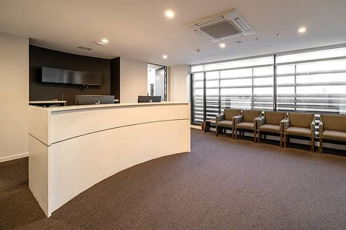
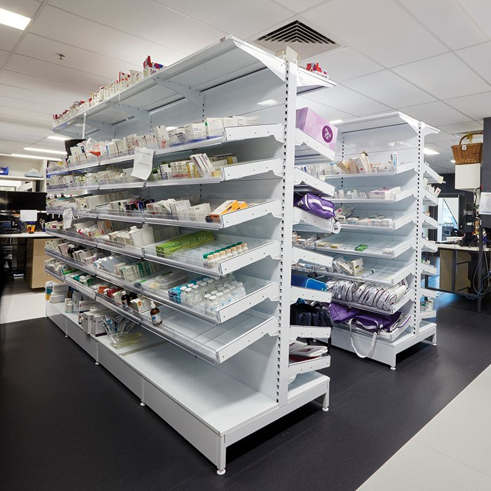

Same engine, three very different weeks
A single-doctor practice, a busy dispensary and a twelve-site group have almost nothing in common operationally. Choose yours.
When everyone does a bit of everything
In a small practice there is no procurement department. There is a nurse who also orders, and a manager who also reconciles. Regnum is built to be the second pair of eyes neither of them has time to be.
- One morning glance replaces the mental checklist
- Refill suggestions turn a two-hour ordering job into a review
- Expiry warnings early enough to actually use the stock
- Month-end export the bookkeeper opens without a phone call

solution-clinic.jpg · 1400×1050
The problem it solves first
Running out of something ordinary on a busy Friday, and only noticing when a patient is already waiting.
Month one for a single facility
Stock-outs get caught days ahead instead of at the counter, and the ordering decision has a number behind it.
Month six for a single facility
Waste from expiry is visible as a line item, and usually a shrinking one, because the warnings arrive while the stock is still usable.
Volume, batches and margin, all at once
A dispensary runs thousands of lines where a small facility runs hundreds. The difficulty is not visibility. It is prioritisation: which of the four hundred things drifting today actually matter.
- Batch-level expiry, so FEFO is enforced by the system not by memory
- Ranked alerts, highest value at risk first rather than alphabetical
- Margin by line, so slow movers with poor margin are obvious
- Anomaly detection on consumption, the early signal for shrinkage

solution-pharmacy.jpg · 1400×1050
The problem it solves first
Write-offs that were entirely predictable: slow lines bought in quantities the counter was never going to move.
Month one for a pharmacy
The expiry list is ordered by money at risk, and someone finally has a defensible reason to stop ordering three particular items.
Month six for a pharmacy
Ordering follows demand rather than habit, and unusual consumption patterns get looked at while they are still small.
The same question, asked of every branch
Groups do not usually lack reports. They lack comparable ones. Every site counts slightly differently, so the numbers argue with each other. Regnum makes each site record the same events the same way, then compares them properly. It reads what each site already keeps rather than requiring every branch to move onto a new system first, which is what makes rolling it out across many facilities realistic.
- Facility comparison on consumption, spend per visit and waste
- Stock redistribution driven by projections, not stocktakes: 130 units of projected excess at one site matched to a 110-unit projected shortfall at another, while both are still usable
- Head-office roll-up with each site still fully operational offline
- Group-wide audit trail with per-site permissions intact
solution-group.jpg · 1400×1050
The problem it solves first
Two branches reporting the same metric in incompatible ways, so nobody trusts the comparison enough to act on it.
Month one for a group
One definition of stock on hand, applied everywhere, and the first honest league table of waste per site.
Month six for a group
Redistribution becomes routine, and the outlier branch gets support rather than a memo about it.
Which capabilities matter most to you
Everything is included. This is about where the value shows up first.
| Capability | Single facility | Pharmacy | Group |
|---|---|---|---|
| Low-stock & expiry alerts | Essential | Essential | Essential |
| Batch-level tracking | Useful | Essential | Essential |
| Demand forecasting | Essential | Essential | Essential |
| Margin & profitability by line | Useful | Essential | Essential |
| Facility comparison | Not needed | Useful | Essential |
| Stock redistribution between sites | Not needed | Useful | Essential |
| Anomaly detection | Useful | Essential | Essential |
| Accounting export | Essential | Essential | Essential |
| Role-based permissions | Useful | Essential | Essential |
The table scrolls sideways to show all three columns.
Not sure which one you are?
Most practices sit between two of these. Tell us how your week runs and we will say honestly whether Regnum is a fit yet.